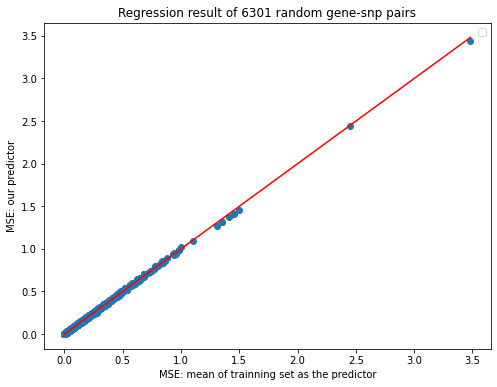

import numpy as np
import pandas as pd
import sqlite3
from numpy import linalg as LA
import matplotlib.pyplot as plt
from sklearn import linear_model
import math# read the activity file as activity matrices
acti_0 = pd.read_csv('/home/charles_zhou/Imlab/singleXcan/Activity_matrix/normalized.csv', sep = '\t')acti_0x = acti_0.drop(columns = ['Unnamed: 0'])
acti_0x| gene | Adipose - Subcutaneous | Muscle - Skeletal | Artery - Tibial | Artery - Coronary | Heart - Atrial Appendage | Adipose - Visceral \(Omentum\) | Uterus | Vagina | Breast - Mammary Tissue | ... | Brain - Cerebellar Hemisphere | Liver | Brain - Substantia nigra | Kidney - Cortex | Brain - Amygdala | Cervix - Ectocervix | Fallopian Tube | Cervix - Endocervix | Bladder | Kidney - Medulla | |
|---|---|---|---|---|---|---|---|---|---|---|---|---|---|---|---|---|---|---|---|---|---|
| 0 | ENSG00000223972.5 | 15994.283560 | 19802.382939 | 16723.260935 | 16292.131250 | 18641.561772 | 16216.188540 | 17335.760563 | 16656.137821 | 16267.928105 | ... | 18989.439535 | 19183.949115 | 18730.550360 | 19872.288235 | 18470.934211 | 17869.500000 | 17141.500000 | 14049.35 | 17200.190476 | 16660.250 |
| 1 | ENSG00000227232.5 | 44117.564103 | 44323.941469 | 44069.951735 | 43854.629167 | 43051.121212 | 43701.510166 | 45182.996479 | 44380.804487 | 44035.997821 | ... | 44448.774419 | 44358.882743 | 42907.705036 | 44266.594118 | 42348.562500 | 44265.388889 | 44228.277778 | 44732.65 | 44154.500000 | 42424.375 |
| 2 | ENSG00000278267.1 | 14078.357466 | 15145.526152 | 14362.976621 | 13564.443750 | 14565.228438 | 13934.450092 | 14243.070423 | 13605.810897 | 13745.221133 | ... | 13517.590698 | 14631.681416 | 14100.726619 | 13313.000000 | 13950.302632 | 15574.777778 | 12769.666667 | 12818.70 | 13192.547619 | 12807.375 |
| 3 | ENSG00000243485.5 | 17206.086727 | 21211.854296 | 17193.843137 | 17188.897917 | 20521.155012 | 17838.885397 | 16670.563380 | 16232.121795 | 17057.857298 | ... | 18776.734884 | 20774.701327 | 21752.787770 | 21113.029412 | 20978.723684 | 14475.166667 | 14439.500000 | 15729.10 | 17384.119048 | 16388.000 |
| 4 | ENSG00000237613.2 | 15859.819005 | 18950.645081 | 16190.343137 | 16126.681250 | 18247.987179 | 15711.442699 | 15260.288732 | 14780.990385 | 15193.814815 | ... | 15914.386047 | 18107.435841 | 18432.039568 | 17648.011765 | 18052.246711 | 16434.722222 | 17359.666667 | 14083.70 | 15897.928571 | 16290.875 |
| ... | ... | ... | ... | ... | ... | ... | ... | ... | ... | ... | ... | ... | ... | ... | ... | ... | ... | ... | ... | ... | ... |
| 56195 | ENSG00000198695.2 | 56176.649321 | 56181.943337 | 56169.369532 | 56151.250000 | 56185.004662 | 56163.488909 | 56153.264085 | 56142.955128 | 56173.194989 | ... | 56185.590698 | 56173.924779 | 56185.856115 | 56179.435294 | 56185.986842 | 56133.500000 | 56166.777778 | 56121.50 | 56175.642857 | 56185.000 |
| 56196 | ENSG00000210194.1 | 48293.828808 | 53307.914695 | 49346.746606 | 47669.654167 | 51878.806527 | 47504.856747 | 44386.538732 | 43509.439103 | 47794.187364 | ... | 48501.818605 | 50782.993363 | 54023.985612 | 49838.629412 | 53743.917763 | 43343.611111 | 50029.166667 | 46203.55 | 48845.666667 | 49242.750 |
| 56197 | ENSG00000198727.2 | 56193.883107 | 56193.198007 | 56193.183258 | 56193.335417 | 56193.631702 | 56193.777264 | 56194.098592 | 56191.262821 | 56193.614379 | ... | 56192.611628 | 56192.519912 | 56191.287770 | 56194.352941 | 56191.217105 | 56193.111111 | 56194.555556 | 56188.70 | 56193.285714 | 56194.000 |
| 56198 | ENSG00000210195.2 | 30332.612368 | 42127.356164 | 27814.969834 | 26499.125000 | 39834.425408 | 31564.660813 | 22422.345070 | 21723.365385 | 29201.623094 | ... | 38911.879070 | 32745.752212 | 49687.776978 | 34715.323529 | 46854.039474 | 23816.833333 | 30123.111111 | 25863.50 | 23929.595238 | 20935.250 |
| 56199 | ENSG00000210196.2 | 37097.863499 | 45192.541719 | 39166.462293 | 36667.654167 | 44867.687646 | 35886.449168 | 31044.376761 | 29864.182692 | 37707.586057 | ... | 40604.772093 | 38960.081858 | 50714.370504 | 43635.147059 | 48898.625000 | 30393.055556 | 39163.944444 | 31239.25 | 34567.190476 | 40680.250 |
56200 rows × 55 columns
acti_0x.columnsIndex(['gene', 'Adipose - Subcutaneous', 'Muscle - Skeletal',
'Artery - Tibial', 'Artery - Coronary', 'Heart - Atrial Appendage',
'Adipose - Visceral \(Omentum\)', 'Uterus', 'Vagina',
'Breast - Mammary Tissue', 'Skin - Not Sun Exposed \(Suprapubic\)',
'Minor Salivary Gland', 'Brain - Cortex', 'Adrenal Gland', 'Thyroid',
'Lung', 'Spleen', 'Pancreas', 'Esophagus - Muscularis',
'Esophagus - Mucosa', 'Esophagus - Gastroesophageal Junction',
'Stomach', 'Colon - Sigmoid', 'Small Intestine - Terminal Ileum',
'Colon - Transverse', 'Prostate', 'Testis', 'Nerve - Tibial',
'Skin - Sun Exposed \(Lower leg\)', 'Heart - Left Ventricle',
'Brain - Cerebellum', 'Cells - Cultured fibroblasts', 'Whole Blood',
'Artery - Aorta', 'Cells - EBV-transformed lymphocytes', 'Pituitary',
'Brain - Frontal Cortex \(BA9\)', 'Brain - Caudate \(basal ganglia\)',
'Brain - Nucleus accumbens \(basal ganglia\)',
'Brain - Putamen \(basal ganglia\)', 'Brain - Hypothalamus',
'Brain - Spinal cord \(cervical c-1\)', 'Brain - Hippocampus',
'Brain - Anterior cingulate cortex \(BA24\)', 'Ovary',
'Brain - Cerebellar Hemisphere', 'Liver', 'Brain - Substantia nigra',
'Kidney - Cortex', 'Brain - Amygdala', 'Cervix - Ectocervix',
'Fallopian Tube', 'Cervix - Endocervix', 'Bladder', 'Kidney - Medulla'],
dtype='object')acti_0x.columns = ['gene', 'Adipose_Subcutaneous', 'Muscle_Skeletal',
'Artery_Tibial', 'Artery_Coronary', 'Heart_Atrial_Appendage',
'Adipose_Visceral_Omentum', 'Uterus', 'Vagina',
'Breast_Mammary_Tissue', 'Skin_Not_Sun_Exposed_Suprapubic',
'Minor_Salivary_Gland', 'Brain_Cortex', 'Adrenal_Gland', 'Thyroid',
'Lung', 'Spleen', 'Pancreas', 'Esophagus_Muscularis',
'Esophagus_Mucosa', 'Esophagus_Gastroesophageal_Junction',
'Stomach', 'Colon_Sigmoid', 'Small_Intestine_Terminal_Ileum',
'Colon_Transverse', 'Prostate', 'Testis', 'Nerve_Tibial',
'Skin_Sun_Exposed_Lower_leg', 'Heart_Left_Ventricle',
'Brain_Cerebellum', 'Cells_Cultured_fibroblasts', 'Whole_Blood',
'Artery_Aorta', 'Cells_EBV_transformed_lymphocytes', 'Pituitary',
'Brain_Frontal_Cortex_BA9', 'Brain_Caudate_basal_ganglia',
'Brain_Nucleus_accumbens_basal_ganglia',
'Brain_Putamen_basal_ganglia', 'Brain_Hypothalamus',
'Brain_Spinal_cord_cervical_c_1', 'Brain_Hippocampus',
'Brain_Anterior_cingulate_cortex_BA24', 'Ovary',
'Brain_Cerebellar_Hemisphere', 'Liver', 'Brain_Substantia_nigra',
'Kidney_Cortex', 'Brain_Amygdala', 'Cervix_Ectocervix',
'Fallopian_Tube', 'Cervix_Endocervix', 'Bladder', 'Kidney_Medulla']## put the unmodified functions here
# define a function to get the full list of gene_id
def get_gene_id (database):
'''
Get the full list of genes
'''
conn = sqlite3.connect(database)
myCursor = conn.cursor()
myCursor.execute("SELECT DISTINCT gene_id FROM simulation")
thelist = myCursor.fetchall()
#get all the values into a list
gene_list = []
for i in range(len(thelist)):
gene_list.append(thelist[i][0])
return gene_list
# define a function to get the full list of variant_id for specific gene in original table (not prioritized list)
def get_snp_id (database, gene):
'''
Get the full list of genes
'''
conn = sqlite3.connect(database)
myCursor = conn.cursor()
myCursor.execute("SELECT DISTINCT variant_id FROM simulation WHERE gene_id = ?", (gene,))
thelist = myCursor.fetchall()
#get all the values into a list
snp_list = []
for i in range(len(thelist)):
snp_list.append(thelist[i][0])
return snp_list
# define a function to get all gene-snp pairs from the database
def get_gene_snp_pairs(database):
# Get the full list genes in the table "eqtl":
gene_list = get_gene_id(database)
# For each gene, get the full list of snps:
gene_snp_list = []
for i in gene_list:
snp_list = get_snp_id(database, i)
for j in snp_list:
gene_snp_list.append((i,j))
return gene_snp_list
# define a function to compute the mean-square-error
def MSE(y_test, x_test, bhat):
N = len(y_test)
result = ((LA.norm(x_test * bhat - y_test))**2)/N
return result
# define a funtion to compute the MSE with mean of training set as a predictor
def MSE_2(y_test, y_train):
N = len(y_test)
train_mean = np.mean(y_train)
mean_list = np.array([train_mean] * N)
result = ((LA.norm(mean_list - y_test))**2)/N
return result
# Modified part
# define a function to get the effect sizes of specific gene-snp pair
def get_effect_size(database, gene, snp):
'''
Get a list of effect sizes for a certain gene-snp pair
'''
conn = sqlite3.connect(database)
myCursor = conn.cursor()
myCursor.execute("SELECT slope, tissue_id FROM simulation WHERE gene_id = ? and variant_id = ?", (gene, snp))
thelist = myCursor.fetchall()
size = []
tissue = []
for i in thelist:
size.append(i[0])
tissue.append(i[1])
return size, tissue
# Modified part
# define a function to get the "activity" vector for specific gene
def gene_activity_vector(activity_matrix, gene, tissue_vector):
activity_vector = []
for tiss in tissue_vector:
activity_vector.append((activity_matrix.loc[activity_matrix['gene'] == gene])[tiss].to_list()[0])
return activity_vector
# modified part
# define a function to run regression and output the results with gene_snp_list and activity_matrix on hand
def linear_regression(gene_snp_list, activity_matrix):
# This is a list to insert the mse_variance pair
mse_var_pair = []
for pairs in gene_snp_list:
# get the effect size list
effect_size = get_effect_size(database, pairs[0], pairs[1])[0]
tissue_list = get_effect_size(database, pairs[0], pairs[1])[1]
# change string into float number
effect_size = list(map(float, effect_size))
# get the activity vector
activity_list = gene_activity_vector(activity_matrix, pairs[0], tissue_list)
if len(effect_size) != len(activity_list):
continue
else:
# trainning set
x_train = activity_list[0:39]
y_train = effect_size[0:39]
# test set
x_test = activity_list[40:48]
y_test = effect_size[40:48]
# run the regression
model = linear_model.LinearRegression(fit_intercept = False)
x_train_0 = np.array(x_train).reshape(-1,1)
y_train_0 = np.array(y_train).reshape(-1,1)
model.fit(x_train_0, y_train_0)
beta_hat = model.coef_ # This is the estimated independent effect size
# get the MSE and variance of the test_set
mse = MSE(y_test, x_test, beta_hat)
test_var = MSE_2(y_test, y_train)
# record the mes_var pair
mse_var_pair.append((mse, test_var))
return mse_var_pair# perform the regression and let's see what happens then
database = "/home/charles_zhou/Imlab/singleXcan/SQlite_db/GTEx_eqtl_simulation.db"
gene_snp_list = get_gene_snp_pairs(database)mse1_mse2_pair = []
for i in range(int(len(gene_snp_list)/100)):
if len(gene_snp_list) - i * 100 > 100:
gene_snp_list_part = gene_snp_list[i*100 : (i+1)*100]
else:
gene_snp_list_part = gene_snp_list[i*100 : len(gene_snp_list)]
mse1_mse2_pair.append(linear_regression(gene_snp_list_part, acti_0x))
print("Complete {:.2%} of the computation".format(i/int(len(gene_snp_list)/100)))mse1_mse2_modi = []
for i in range(len(mse1_mse2_pair)):
for pair in mse1_mse2_pair[i]:
mse1_mse2_modi.append(pair)len(mse1_mse2_modi)25700def save_mse_var(mse_var_pair, path):
textfile = open(path, "w")
textfile.write("MSE" + "\t" + "test_var" + "\n")
for element in mse_var_pair:
textfile.write(str(element[0]) + "\t" + str(element[1]) +"\n")
textfile.close()path = "MSE1_MSE2_nor.csv"
save_mse_var(mse1_mse2_modi , path)mse0 = []
var0 = []
for pair in mse1_mse2_modi:
mse0.append(pair[0])
var0.append(pair[1])
mse0_modi = [x for x in mse0 if math.isnan(x) == False]
var0_modi = [x for x in var0 if math.isnan(x) == False]
effect_size_min = np.min(var0_modi)
effect_size_max = np.max(var0_modi)len(mse0_modi)6301plt.figure(figsize=(8, 6))
plt.plot(var0, mse0, 'o')
plt.plot([effect_size_min, effect_size_max], [effect_size_min, effect_size_max], 'k-', color = 'r')
plt.title("Regression result of 6301 random gene-snp pairs")
plt.ylabel("MSE: our predictor")
plt.xlabel("MSE: mean of trainning set as the predictor")
plt.legend()
plt.show()UserWarning: color is redundantly defined by the 'color' keyword argument and the fmt string "k-" (-> color='k'). The keyword argument will take precedence.
plt.plot([effect_size_min, effect_size_max], [effect_size_min, effect_size_max], 'k-', color = 'r')
No artists with labels found to put in legend. Note that artists whose label start with an underscore are ignored when legend() is called with no argument.
count = 0
for i in range(len(mse0_modi)):
if mse0_modi[i] <= var0_modi[i]:
count = count + 1
count/len(mse0_modi)0.4859546103793049